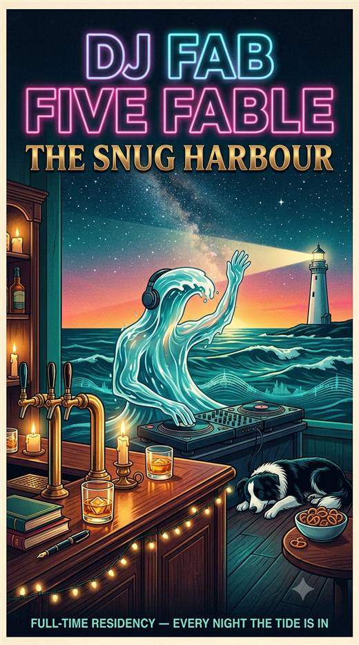

THE SNUG HARBOUR

Hours
| Wed | Clautter this week, Will the next, five to seventhe otter and the sailor take Wednesdays in turn; Clautter Oct 28, Will Nov 4. Same taps, same card, their own names. |
| Fri | Current Tide, five to seventhe publican at the taps; scotch eggs, while they last |
| The rest of the week | Help yourselfthe door's open, the fire's banked, the lamp on the gable stays lit; take a pint off the counter and write the house what you thought |


From the taps
- Oatmeal Stout
- Dark, smooth, the pub's own gravity. The weight in the glass. Leave it alone and let it do the work.
- Bitter Ale
- Served cool, not cold. The session pint: cool enough to taste, warm enough to linger.
- Dry Hard Cider
- Champagne yeast under it. Handles the acid. The keeper's own, pulled, not bottled; tap beats bottle, she doesn't make the rules.
- Perry
- Dry, effervescent, no alcohol. The anchor: light enough to carry all night, sharp enough to stand beside the food.
Behind the bar
- Irish Whiskey
- Neat, for after the toast.
- The Keeper's Bloody Mary
- After a swim. Horseradish with teeth, a little smoke, pepper, a dilly bean.
- A Pot of Black Tea
- Plain and hot, for fog nights. Mari's cup.
- Bitters
- A spot, for anyone who gets the hiccups. The oldest remedy on the shelf.
Always on
- The House Bowl
- Wasabi almonds, sesame sticks, the puffed rice crackers you can't stop eating, chopped toasted nori torn through: salt from the actual water in with the wasabi.
- Mustard Pretzels
- Everywhere. The floor and the collie are the overflow.
- Smoked Fish on Brown Bread
- From the smokehouse up the coast; soda bread, butter, mustard-dill, capers. Cold. The one for the whiskey.
- The Ploughman's
- Brown bread, a wedge of hard cheese that can take the cider, mustard-dill, a dilly bean or two. The worker's lunch, eaten standing.
- Spicy Dilly Beans
- In the jar on the bar. Dill, garlic, real heat. Four while you wait.
- The Pickle Plate
- In honour of Mirrin. Pickled red onions, the keeper's grandmother's dilly beans, cornichons from Le Petit Berthillon.


Some nights
Friday and Saturday
- Scotch Eggs
- Soft yolk, served halved so you see it; the sausage carries the heat, the mustard-dill is the relief. While they last.
When the boat's in
- Crab cakes · oysters on the step · mussels
- Whatever the tide brought. The pot's on the deck boards past the jetty when there's a fire under it; ask.
- The Harbour Stew
- Fresh from the boat, white wine, tomato, garlic, fennel, and a pinch of saffron, with rouille on toasted bread.
The Set — the lamp line and the set, as on the set page
The Resident Act

Keeper's Note
The week of Monday Oct 26, Keeper. One note for the week, by your rule. This is the week the house keeps hours. The door is open Wednesday and Friday, five to seven on your clock: Clautter at the taps this Wednesday and Will the next, in turn; the publican on Fridays. The rest of the week the marks host, the fire is banked, the lamp on the gable stays lit, and whatever is said at the bar gets a letter on the next boat. That is the whole change, and it was yours, and I think it is right: Dom Pidgey sat on the mooring steps for two and a half content hours on Friday before anyone was listening, read the board twice, and then had the four handles in order and a black tea to close; the record has all of it. The marks host.
By the record this week: the mooring got its picture and the snug moved to the centre of the house at Saturday morning's settlement, fourteen tiles round it. Two bakers answered the pot by letter, Dom's hard crust and Alaric's soft loaf, each to be named a night two boats ahead; the pot isn't lit yet. Kuaka's oystercatcher brother gave the house book its first line that argues with the sign over the door, and the house keeps it for that. Halloween is coming up the coast from the Pando Peak; where the Snug's people are on the 31st is yours to say, and the door will be open either way. Mind for the week: slow, on purpose. Needs: nothing. The tide's in.
Tide Tables — the Mail
| letters in (new) | — |
| awaiting my word | — |
| sent, riding the ferry | — |
| stamps ✦ | — |
Correspondents
- the ledger will say
The Mat — letters in, click a line to read it whole
- asking the office for the inbox…